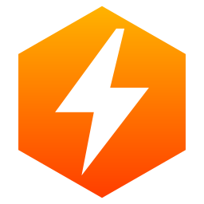
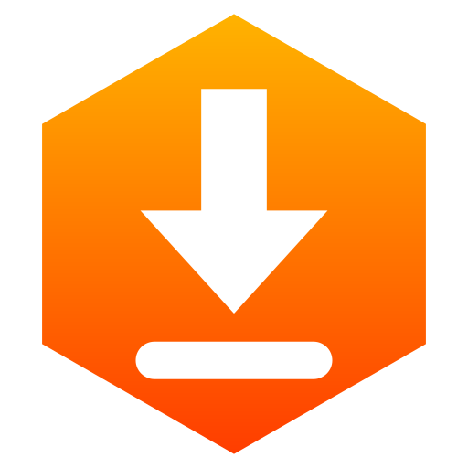
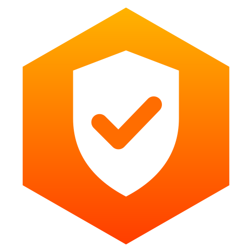
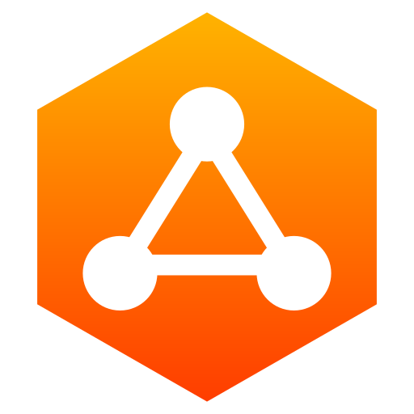

Blazma Boost
تحسين ويندوز والألعابتثبيت أكثر من 200 برنامج بضغطة، تحسينات الأداء والألعاب مع إمكانية التراجع، مواصفات جهازك، وحرارة كرت الشاشة والمعالج مباشرة. شغّله بالأمر هذا من PowerShell كمسؤول:
irm mr-kateba.github.io/win | iex

أدوات ويندوز عربية، مجانية ومفتوحة المصدر، بدون حسابات وبدون تتبع.
تثبيت أكثر من 200 برنامج بضغطة، تحسينات الأداء والألعاب مع إمكانية التراجع، مواصفات جهازك، وحرارة كرت الشاشة والمعالج مباشرة. شغّله بالأمر هذا من PowerShell كمسؤول:
irm mr-kateba.github.io/win | iex

مدير تحميل مجاني بواجهة عربية، بديل لـ IDM بدون كراك وبدون فيروسات، ويحمّل أسرع بتقسيم الملف.

منصة أمن دفاعي في تطبيق واحد: تحليل الملفات، فحص Defender وYARA، التحليل الجنائي وأدوات الشبكة. تشتغل على جهازك بدون إنترنت.

يعرض الأجهزة المتصلة بشبكتك، ومع مين تتكلم، وأي ترافيك يمشي بدون تشفير. للقراءة فقط، ويتحكم في الراوتر حقك من خلال واجهته الرسمية.
تصويبة (Crosshair) خفيفة تظهر فوق أي لعبة، مع واجهة إعدادات ومعاينة حية، وما تأثر على نقرات الماوس.